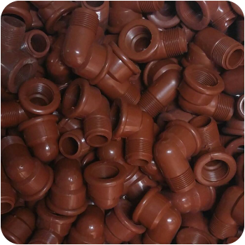
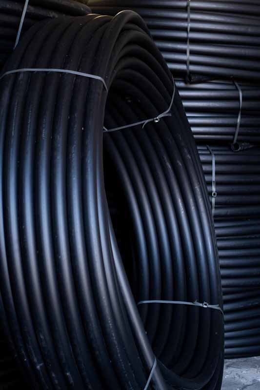
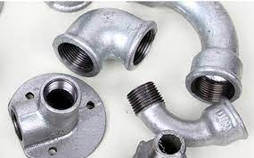
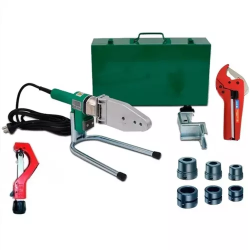

La gran memoria elástica del PVC, junto a su mayor resistencia mecánica, permiten que los tubos resistan mejor las deformaciones ocasionadas por sobrecargas y recuperen su sección al retirar estas. A su vez, requiere de menor cantidad de fijaciones para instalaciones suspendidas.
Hoy en día es fácil reconocer al PVC como la materia prima con las mayores ventajas para los sistemas sanitarios. Las características físico químicas de este material supera ampliamente a los requerimientos de las instalaciones domiciliarias e industriales
No se rompe. No se ablanda. No se quiebra. No se corroe. Awaduct es unión deslizante por O'Ring de doble labio alemán. No se pega ni se suelda. No pierde.
En presencia de altas temperaturas y sustancias corrosivas no sedegrada, por ello supera largamente los requerimientos de vida útil de latotalidad de las instalaciones domiciliarias y de la mayoría de las instalaciones industriales.
Resulta altamente recomendable para riego de campos y sembrados; irrigación por tendido bajo tierra, apoyado o suspendido y conexión entre pozos, cisternas, molinos, aguadas, etc.
Está especialmente diseñado para tendidos largos que se encuentren bajo condiciones climáticas y de instalación con alta exigencia
Ademas se puede aplicar a la construccion o industrias
El acero galvanizado es un elemento de acero recubierto por varias capas de zinc mediante un proceso que ayuda a proteger la pieza de la oxidación. Debido a sus propiedades, el acero galvanizado se utiliza desde los alambres y cables, hasta la construcción de mobiliario resistente como las estanterías metálicas. En nuestro día a día lo encontramos en las tuberías, láminas, tornillos, tuercas, barandillas o incluso en los elementos de señalización. También es muy utilizado en el sector de la construcción, ferroviario, industria, telecomunicaciones o tendidos eléctricos.
proceso de unión térmica molecular dónde se fusiona un accesorio plástico con un tramo de tubería del mismo material. Este sistema garantiza hermeticidad, resistencia a presiones altas, una instalación económica y amigable con el medio ambiente.
Hoy en dia lo podemos encontrar en:
Para todo tipo de trabajos
